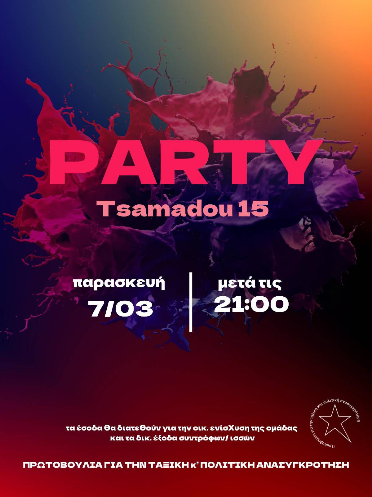

Πάρτυ για την οικονομική ενίσχυση της ομάδας και τα δικαστικά έξοδα συντρόφων/συντροφισσών.
Παρασκευή 7/3, μετά τις 21:00, στο Στέκι Μεταναστών, Τσαμαδού 15


«Την επιλογή την έκανε η ταξική συνείδηση»
Date: Μάρτιος 4, 2025
Παρασκευή 7/3, μετά τις 21:00, στο Στέκι Μεταναστών, Τσαμαδού 15
Date: Φεβρουάριος 12, 2025
Προβολή της ταινίας Hunger, γύρω από τον αγώνα και την απεργία πείνας των μελών του I.R.A. στην Ιρλανδία. Θα ακολουθήσει συζήτηση και μπαρ.
Date: Δεκέμβριος 12, 2024
Μια ανταλλαγή εμπειριών και κυκλοφορία αγώνων στο στέκι μεταναστών στην Τσαμαδού
Date: Δεκέμβριος 5, 2024
Κάλεσμα στη δική των συντρόφων που κατηγορούνται για συμμετοχή σε εγκληματική οργάνωση στην υπόθεση "Μασόβκα"
Date: Νοέμβριος 10, 2024
51 χρόνια μετά, ό,τι μας έφερε στην εξέγερση του Πολυτεχνείου είναι ακόμα εδώ: φτώχεια, πόλεμος, καταστολή. Η μνήμη μιας εξέγερσης, όσο εστιάζει εμμονικά στο αποστασιοποιημένο πια γεγονός του '73, όσο μετατρέπει τους ανθρώπους σε ήρωες, τα πολιτικά υποκείμενα σε θύματα και το ζωντανό παρόν σε μνημειακό παρελθόν, τόσο νεκρώνει. Γίνεται αφήγηση στερημένη από την ιστορικότητα της
Διάβασε περισσότεραDate: Μάιος 1, 2024
Μόνος δρόμος η οργανωμένη ταξική πάλη
Date: Ιανουάριος 28, 2024
Το Ν/Σ Φλωρίδη έρχεται να θωρακίσει την κοινωνική λεηλασία και να ποινικοποιήσει τους ταξικούς αγώνες εναντίον της
Διαβάστε το κείμενο μας
Διάβασε το έγγραφοΗμερομηνία: Νοέμβριος 16, 2023
Κριτική στον όρο μεταπολίτευση και πολιτική αποτίμηση των "μεταπολιτευτικών" χρόνων.
Διαβάστε το κείμενο μας
Διάβασε το έγγραφο